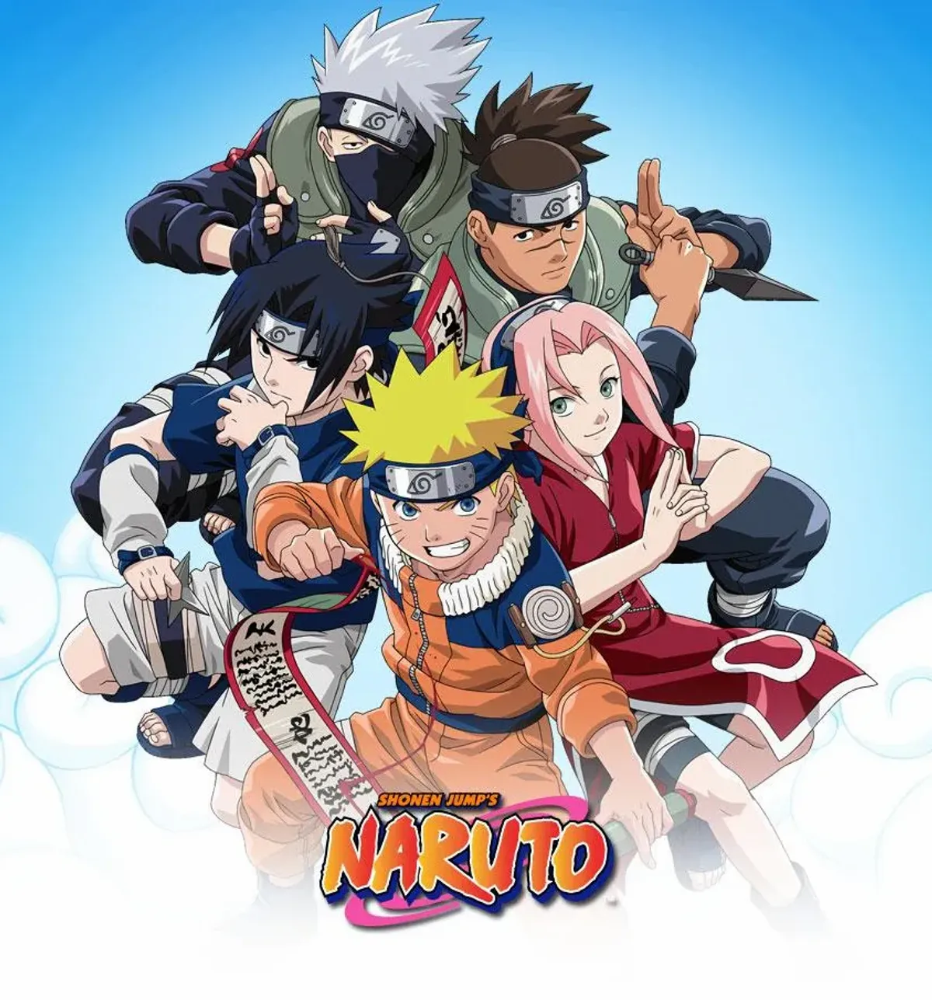
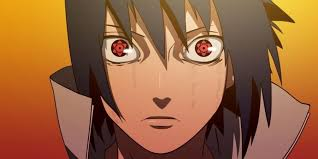

Naruto

Naruto is a Japanese manga series by Masashi Kishimoto, following the story of Naruto Uzumaki, a young orphan ninja from
the Hidden Leaf Village
 Naruto Uzumaki is the main character of the anime and manga series Naruto, introduced as a 12-year-old ninja from Konohagakure, the Hidden Leaf Village. He is a determined and energetic orphan who dreams of becoming Hokage, the leader of his village. Naruto is known for his spiky blonde hair, blue eyes, and a unique set of cheek markings. His childhood was marked by being shunned due to the Nine-Tailed Fox (Kurama) sealed within him.
Naruto Uzumaki is the main character of the anime and manga series Naruto, introduced as a 12-year-old ninja from Konohagakure, the Hidden Leaf Village. He is a determined and energetic orphan who dreams of becoming Hokage, the leader of his village. Naruto is known for his spiky blonde hair, blue eyes, and a unique set of cheek markings. His childhood was marked by being shunned due to the Nine-Tailed Fox (Kurama) sealed within him.

Sasuke Uchiha is a fictional character in the Naruto series created by Masashi Kishimoto. He is a powerful ninja, a member of the Uchiha clan, and a key rival of Naruto Uzumaki. Sasuke is known for his impressive abilities, dark character development, and complex relationship with Naruto
 Sasuke Uchiha is a fictional character in the Naruto series created by Masashi Kishimoto. He is a powerful ninja, a member of the Uchiha clan, and a key rival of Naruto Uzumaki. Sasuke is known for his impressive abilities, dark character development, and complex relationship with Naruto
Sasuke Uchiha is a fictional character in the Naruto series created by Masashi Kishimoto. He is a powerful ninja, a member of the Uchiha clan, and a key rival of Naruto Uzumaki. Sasuke is known for his impressive abilities, dark character development, and complex relationship with Naruto
.jpeg) Kakashi Hatake is introduced in Naruto as the Jonin leader of Team 7, a new ninja team. He is known as the Copy Ninja and is revered for his Sharingan, which he received from Obito Uchiha. Kakashi is initially presented as a carefree individual, but his true strength and leadership abilities are revealed when he tests his students. He is a talented ninja, often sought for advice and leadership.
Kakashi Hatake is introduced in Naruto as the Jonin leader of Team 7, a new ninja team. He is known as the Copy Ninja and is revered for his Sharingan, which he received from Obito Uchiha. Kakashi is initially presented as a carefree individual, but his true strength and leadership abilities are revealed when he tests his students. He is a talented ninja, often sought for advice and leadership.